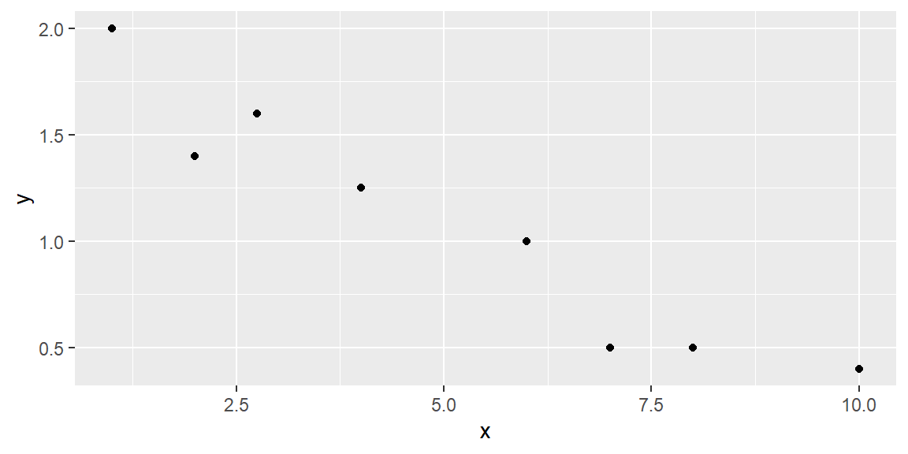
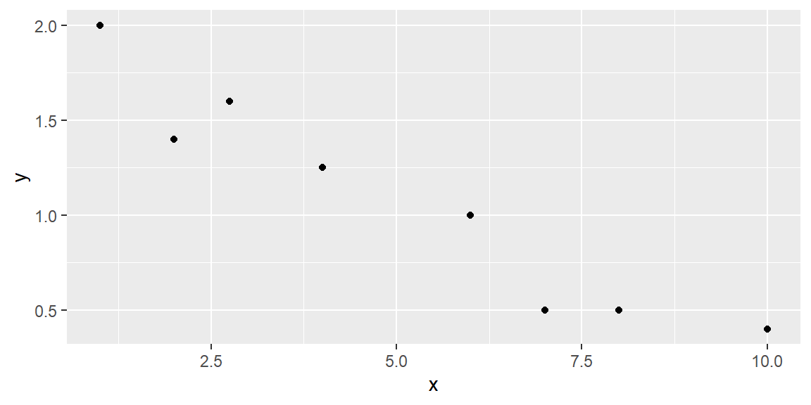

library(tidyverse)
x = c(1, 2, 2.75, 4, 6, 7, 8, 10)
y = c(2, 1.4, 1.6, 1.25, 1, 0.5, 0.5, 0.4)
dat = tibble(x, y)
dat |>
ggplot(aes(x = x, y = y)) +
geom_point()
“Regression. It is a universal rule that the unknown kinsman in any degree of any specified man, is probably more mediocre than he.” - Francis Galton
The simplest model for relating a response variable \(y\) to a single independent variable \(x\) is a straight line.
We will begin by discussing simple linear models and how to fit them to a dataset using the method of least squares.
Next, we will demonstrate how to determine whether a relationship exists between \(y\) and \(x\), and how to use the model to either estimate \(E(y)\), the mean value of \(y\), or to predict a future value of \(y\) for a given \(x\).
This collection of methods is known as simple linear regression analysis.
When studying environmental science, consider modeling the monthly carbon dioxide (CO₂) emissions \(y\) of a city as a function of its monthly industrial activity \(x\).
The first question to ask is: Do you believe an exact (deterministic) relationship exists between these two variables?
In other words, can we predict the exact value of CO₂ emissions if industrial activity is known?
It’s unlikely. CO₂ emissions depend on various factors beyond industrial activity, such as weather conditions, regulatory policies, and transportation levels. Even with multiple variables in the model, it’s improbable that we could predict monthly emissions precisely.
There will almost certainly be some variation in emissions due to random phenomena that cannot be fully explained or modeled.
Therefore, we should propose a probabilistic model for CO₂ emissions that accounts for this random variation:
\[ y = E(y) + \varepsilon \]
The random error component,\(\varepsilon\), captures all unexplained variations in emissions caused by omitted variables or unpredictable random factors.
The random error plays a key role in hypothesis testing, determining confidence intervals for the model’s deterministic portion, and estimating the prediction error when using the model to predict future values of \(y\).
Let’s start with the simplest probabilistic model—a first-order linear model that graphs as a straight line.
The first-order linear model is expessed as \[ y = \beta_0 + \beta_1 x + \varepsilon \]
where:
We use Greek symbols \(\beta_0\) and \(\beta_1\) to denote the y-intercept and slope of the line. These are population parameters with values that would only be known if we had access to the entire population of \((x, y)\) measurements.
Usually, in Statistics, lower-case Greek letters are used to denote population parameters. In our model above, we have an exception. The Greek letter \(\varepsilon\) is not a parameter, but a random variable (parameters are not random variables in frequentist statistics).
As discussed in sec-regoverview, regression can be viewed as a six-step process. For now, we’ll focus on steps 2-6, using the simple linear regression model. We’ll explore more complex models later.
Suppose we have the data shown in Table tbl-table2_1 below and plotted in the scatterplot in Figure fig-2_1.
| x | y |
|---|---|
| 1 | 2 |
| 2 | 1.4 |
| 2.75 | 1.6 |
| 4 | 1.25 |
| 6 | 1 |
| 7 | 0.5 |
| 8 | 0.5 |
| 10 | 0.4 |
library(tidyverse)
x = c(1, 2, 2.75, 4, 6, 7, 8, 10)
y = c(2, 1.4, 1.6, 1.25, 1, 0.5, 0.5, 0.4)
dat = tibble(x, y)
dat |>
ggplot(aes(x = x, y = y)) +
geom_point()
We hypothesize that a straight-line model relates y to x, as follows:
\[ y = \beta_0 + \beta_1 x + \varepsilon \]
How can we use the data from the eight observations in Table tbl-table2_1 to estimate the unknown y-intercept (\(\beta_0\)) and slope (\(\beta_1\))?
We can start by trying some lines and see how well they fit the data. But how do we measure how well a line fits the data?
A quantitative method to evaluate how well a straight line fits a set of data is by measuring the deviations of the data points from the line.
\(y\) is the variable of interest, so we are focused on the differences between observed \(y\) and the predicted value of \(y\)
We calculate the magnitude of the deviations (the differences between observed and predicted values of \(y\)).
These deviations, or prediction errors, represent the vertical distances between observed and predicted values of \(y\).
Suppose we try to fit the line \[ \hat{y} =2-.2x \tag{2.1}\]
This line can be seen in Figure fig-2_2.
dat |>
ggplot(aes(x = x, y = y)) +
geom_point() +
geom_abline(intercept = 2, slope = -0.2, color = "red")The observed and predicted values of \(y\), their differences, and their squared differences are shown in the table below.
| \(x\) | \(y\) | \(\hat{y}\) | \((y - \hat{y})\) | \((y - \hat{y})^2\) |
|---|---|---|---|---|
| 1 | 2 | 1.8 | 0.2 | 0.004 |
| 2 | 1.4 | 1.6 | -0.2 | 0.004 |
| 2.75 | 1.6 | 1.45 | 0.15 | 0.0225 |
| 4 | 1.25 | 1.2 | 0.05 | 0.0025 |
| 6 | 1 | 0.8 | 0.2 | 0.04 |
| 7 | 0.5 | 0.6 | -0.1 | 0.01 |
| 8 | 0.5 | 0.4 | 0.1 | 0.01 |
| 10 | 0.4 | 0 | 0.4 | 0.16 |
Note that the sum of the errors (SE) is 0.8, and the sum of squares of the errors (SSE), which emphasizes larger deviations from the line, is 0.325.
We can try another line to see if we do better at predicting \(y\) (that is, have smaller SSE).
Let’s try the line \[ \hat{y} =1.8-.15x \tag{2.2}\]
This line can be seen in Figure fig-2_3.
dat |>
ggplot(aes(x = x, y = y)) +
geom_point() +
geom_abline(intercept = 1.8, slope = -0.15, color = "red")The fit results are shown in Table tbl-table2_3.
| \(x\) | \(y\) | \(\hat{y}\) | \(y - \hat{y}\) | \((y - \hat{y})^2\) |
|---|---|---|---|---|
| 1 | 2 | 1.65 | 0.35 | 0.1225 |
| 2 | 1.4 | 1.5 | -0.1 | 0.01 |
| 2.75 | 1.6 | 1.3875 | 0.2125 | 0.04515625 |
| 4 | 1.25 | 1.2 | 0.05 | 0.0025 |
| 6 | 1 | 0.9 | 0.1 | 0.01 |
| 7 | 0.5 | 0.75 | -0.25 | 0.0625 |
| 8 | 0.5 | 0.6 | -0.1 | 0.01 |
| 10 | 0.4 | 0.3 | 0.1 | 0.01 |
The SSE for this line is 0.2727, which is lower than the SSE for the previous line, indicating a better fit.
While we could try additional lines to achieve a lower SSE, there are infinitely many possibilities since \(\beta_0\) and \(\beta_1\) can take any real value.
Using Calculus, we can attempt to minimize the SSE for the generic line \[\begin{align*} \hat{y} = b_0 +b_1 x \end{align*}\]
We will denote the sum of the squared distances with \(Q\): \[ Q=\sum \left(y_i-\hat{y}_i\right)^2 \tag{2.3}\]
We determine the “best” line as the one that minimizes \(Q\).
To minimize \(Q\), we differentiate it with respect to \(b_{0}\) and \(b_{1}\): \[\begin{align*} \frac{\partial Q}{\partial b_{0}} & =-2\sum \left(y_{i}-\left(b_{0}+b_{1}x_{i}\right)\right)\\ \frac{\partial Q}{\partial b_{1}} & =-2\sum x_{i}\left(y_{i}-\left(b_{0}+b_{1}x_{i}\right)\right) \end{align*}\]
Setting these partial derivatives equal to 0, we have \[\begin{align*} -2\sum \left(y_{i}-\left(b_{0}+b_{1}x_{i}\right)\right) & =0\\ -2\sum x_{i}\left(y_{i}-\left(b_{0}+b_{1}x_{i}\right)\right) & =0 \end{align*}\] Looking at the first equation, we can simplify as \[\begin{align*} -2\sum \left(y_{i}-\left(b_{0}+b_{1}x_{i}\right)\right)=0 & \Longrightarrow\sum \left(y_{i}-\left(b_{0}+b_{1}x_{i}\right)\right)=0\\ & \Longrightarrow\sum y_{i}-\sum b_{0}-b_{1}\sum x_{i}=0\\ & \Longrightarrow\sum y_{i}-nb_{0}-b_{1}\sum x_{i}=0\\ & \Longrightarrow\sum y_{i}=nb_{0}+b_{1}\sum x_{i} \end{align*}\]
Simplifying the second equation gives us \[\begin{align*} -2\sum x_{i}\left(y_{i}-\left(b_0+b_1x_{i}\right)\right)=0 & \Longrightarrow\sum x_{i}\left(y_{i}-\left(b_0+b_1x_{i}\right)\right)=0\\ & \Longrightarrow\sum x_{i}y_{i}-b_0\sum x_{i}-b_1\sum x_{i}^{2}=0\\ & \Longrightarrow\sum x_{i}y_{i}=b_0\sum x_{i}+b_1\sum x_{i}^{2} \end{align*}\]
The two equations \[ \begin{align} \sum y_{i} & =nb_0+b_1\sum x_{i}\nonumber\\ \sum x_{i}y_{i} & =b_0\sum x_{i}+b_1\sum x_{i}^{2} \end{align} \tag{2.4}\]
are called the normal equations.
We now have two equations and two unknowns (\(b_0\) and \(b_1\)). We can solve the equations simultaneously. We solve the first equation for \(b_0\) which gives us \[\begin{align*} b_0 & =\frac{1}{n}\left(\sum y_{i}-b_1\sum x_{i}\right)\\ & =\bar{y}-b_1\bar{x}. \end{align*}\]
We now substitute this into the second equation in Equation eq-w1_3. Solving this for \(b_1\) gives us \[\begin{align*} & \sum x_{i}y_{i}=b_0\sum x_{i}+b_1\sum x_{i}^{2}\\ & \quad\Longrightarrow\sum x_{i}y_{i}=\left(\bar{y}-b_1\bar{x}\right)\sum x_{i}+b_1\sum x_{i}^{2}\\ &\quad\Longrightarrow b_1=\frac{\sum \left(x_{i}-\bar{x}\right)\left(y_{i}-\bar{y}\right)}{\sum \left(x_{i}-\bar{x}\right)^{2}}. \end{align*}\]
The equations \[ \begin{align} b_0 & =\bar{y}-b_1\bar{x}\\ b_1 & =\frac{\sum \left(x_{i}-\bar{x}\right)\left(y_{i}-\bar{y}\right)}{\sum \left(x_{i}-\bar{x}\right)^{2}} \end{align} \tag{2.5}\] are called the least squares estimators.
To show these estimators are the minimum, we take the second partial derivatives of \(Q\): \[\begin{align*} \frac{\partial^{2}Q}{\partial\left(b_{0}\right)^{2}} & =2n\\ \frac{\partial^{2}Q}{\partial\left(b_{1}\right)^{2}} & =2\sum x_{i}^{2} \end{align*}\] Since these second partial derivatives are both positives, then we know the least squares estimators are the minimum.
The least squares estimators in Equation eq-w1_4 can be expressed in simpler terms if we let \[\begin{align*} SS_{xx} &= \sum \left(x_i-\bar x\right)^2 \\ SS_{xy} &= \sum \left(x_i-\bar x\right)\left(y_i - \bar y\right) \end{align*}\]
The least squares estimates become \[\begin{align} {b_1=\frac{SS_{xy}}{SS_{xx}}}\\ {b_0=\bar{y}-b_1\bar{x}} \end{align}\]
To recap: The straight line model for the response \(y\) in terms of \(x\) is \[\begin{align*} {y = \beta_0 + \beta_1 x + \varepsilon} \end{align*}\]
The line of means is \[\begin{align*} {E(y) = \beta_0 + \beta_1 x } \end{align*}\]
The fitted line (also called the least squares line) is \[\begin{align*} {\hat{y} = b_0 + b_1 x } \end{align*}\]
For a given data point, \((x_i, y_i)\), the observed value of \(y\) is denoted as \(y_i\) and the predicted value of \(y\) is obtained by substituting \(x_i\) into the prediction equation: \[\begin{align*} {\hat{y}_i = b_0 + b_1 x_i } \end{align*}\]
The deviation of the \(i\)th value of \(y\) from its predicted value, called the \(i\)th residual, is \[\begin{align*} { \left(y_i-\hat{y}_i\right) } \end{align*}\] Thus, SSE is just the sum of the squared residuals.